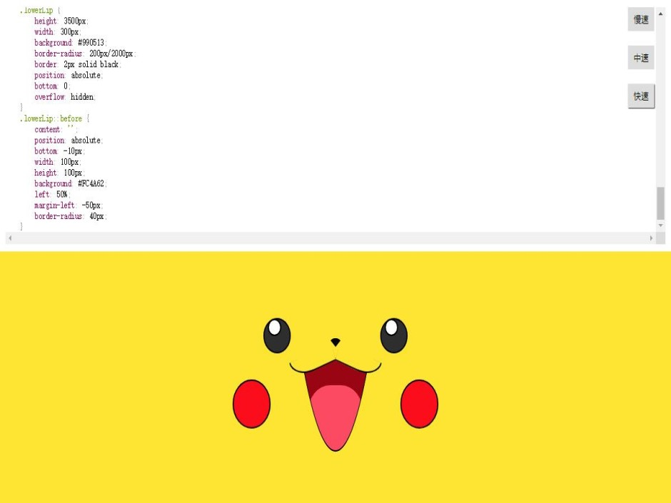
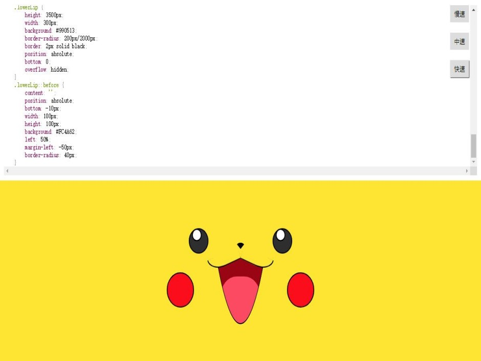
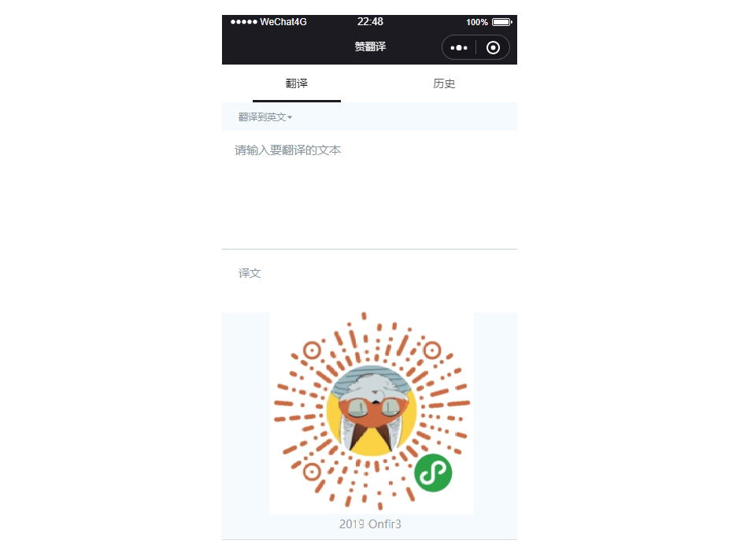
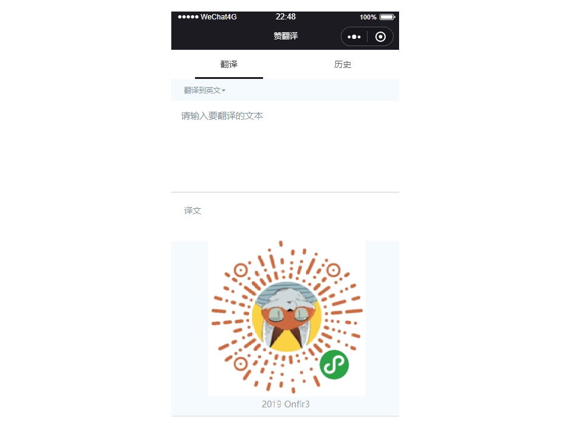

Hello
文登
初级前端
- 年龄
- 24
- 所在城市
- 西安
- 邮箱
- w526529650@outlook.com
- 手机
- 18722427710

初级前端


 

 

描述:
该项目使用 Vue 实现了一个在线博客分享的平台。包含首页、用户文章列表、个人管理等页面，实现了登录、注册、编辑、发布等功能。项目使用 Grid 作页面布局，以 Vue CLI 为基础创建项目模版，使用 Less 作 CSS 预处理，引用 Element UI 作交互。通过 Vue Router 实现路由的跳转、异步加载、权限验证等，通过 vuex 实现状态管理，用 Axios 获取数据，并对接口进行了封装。
技术栈：
Vue CLI/ Vue2/ Axios/ Vue Router/ Vuex/ ES6/ Npm/ Grid/ Less
描述:
使用原生 js 实现的一个自适应屏幕的音乐播放器，主要利用 html5 的 Audo API 的使用，在实现过程中深化了我对组件化思路，Ajax以及跨域的运用。
描述:
一款提供翻译功能的微信小程序。该项目以百度翻译 API 为服务器域名提供支持，主要包含翻译首页、语言列表页和翻译历史页。项目逻辑简单，页面清新，提供了 7 种语言选择，欢迎尝试(扫描上面轮播中的二维码或微信搜索“赞翻译”)。
描述:
用CSS构建出一个键盘的样式，并且对应的每个按键都可编辑对应的网站，同时抓取对应网站的 favicon 展示在相应的键位上，编辑完成后，可以通过敲击键盘对应键位进行页面访问。
描述:
使用纯原生 JS 开发，主要利用 HTML 5 的 Canvas API ，是我学习原生 JS 及 Canvas 过程中所开发的小工具。 其提供在 PC 及手机端在线画画、橡皮擦、画笔调色、画作删除等功能，并支持画作下载。
描述:
小作品，使用 jQuery 实现了苹果早期风格的轮播效果。
描述:
是一个使用纯原生 JS 开发的，动态显示 CSS 画一个皮卡丘过程的小作品。该作品主要思路是通过间隔计时器遍历预先设置在 preview 标签内代码，将其一个个显示在页面上，并在 style 标签上作同样处理，以使代码 CSS 生效。此外，实现了 CSS 高亮效果及调速功能。
熟练 HTML、DIV + CSS 的页面布局，能根据设计图像素级完成页面制作。
熟悉 HTML 5 及语义化，了解 Canvas 动画制作，掌握 CSS 3 动画、过渡效果等常用技术。
熟悉原生 JavaScript，会使用 ES6+ 常用规范，了解 jQuery 常用 API 及思想。
熟悉 Vue 常用功能，理解生命周期、组件、虚拟 DOM、数据响应式等概念，能够使用 Vue 全家桶开发项目。
了解 HTTP 相关知识，熟悉 MVC 、 MVVM 。
有移动端开发经验，会使用REM、vw/ vh、响应式 等技术制作适配手机设备的页面。
熟练使用 VsCode、WebStorm、less、Git 等开发工具。